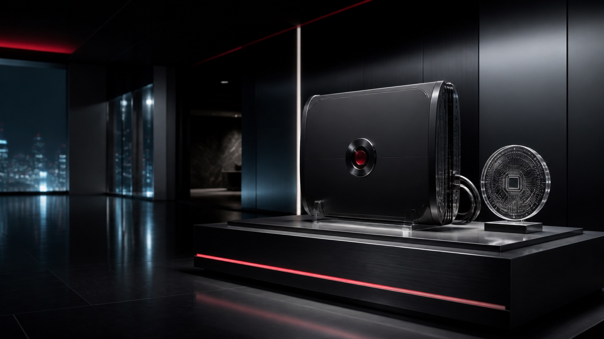
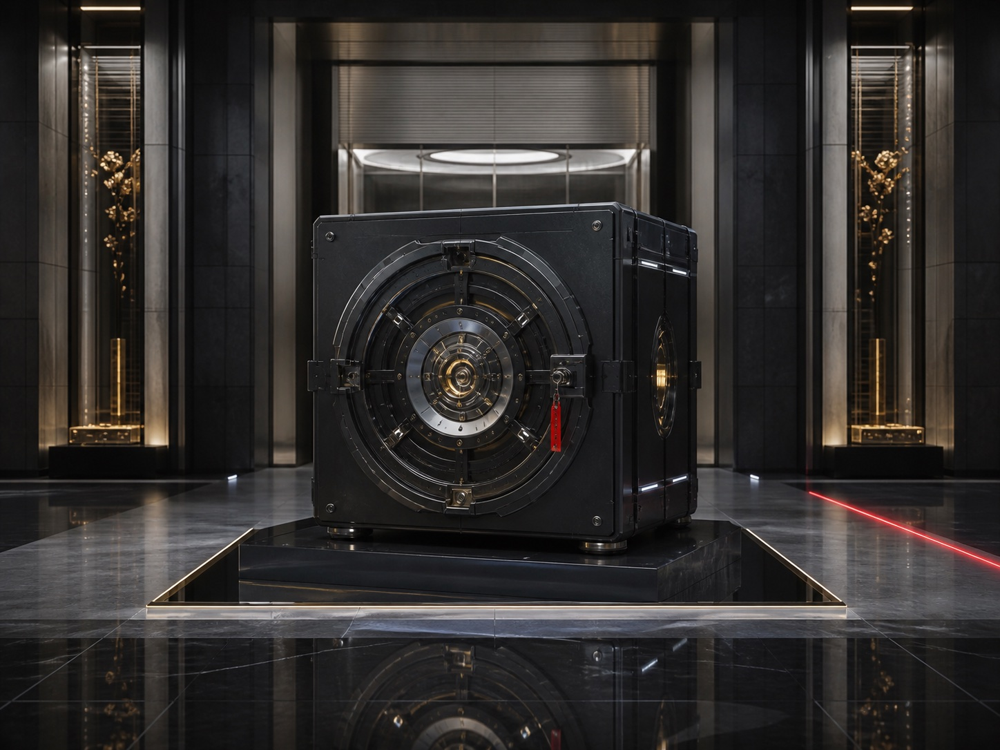

Neural continuity
Identity capture, long-duration model integrity, and governed continuity across biological and synthetic states.

 荒坂株式会社
荒坂株式会社
Arasaka Research
Arasaka Research develops the underlying systems for continuity, secure computation, institutional custody, and accountable autonomy.
Research domains
Research programs move toward products only when technical performance and institutional control can be evaluated together.

Identity capture, long-duration model integrity, and governed continuity across biological and synthetic states.
Policy-aware computation, hostile-route isolation, and resilient operation at sovereign network boundaries.

Custody, settlement, and authority models for capital and knowledge assets with generational time horizons.
Machine coordination with explicit human authority, civilian exclusions, and complete action receipts.
Research governance
Named accountability for consequential decisions.
Failure and recovery tested in isolated environments.
Provenance, change, and action receipts retained by default.
Capabilities move gradually into validated operating boundaries.
Institutional access